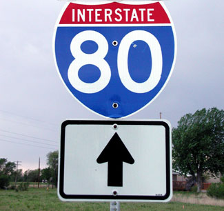

Regional and Local Transportation Projects
Our ProjectTracker software as a service is currently used to track over 50% of all Transportation Improvement Program dollars in California. Our software has proven a huge success for large MPOs like Los Angeles County as well as small MPOs.
We have over eight years of success in providing our web-based transportation software. We provide great service and detailed software focusing on your business process.
We can help you to better manage data for near-term transportation projects (TIP), long-range projects (RTP), air quality conformity projects, and local transportation projects (tax measure funded).

ProjectTracker Software as a Service
- Very low costs
- Eliminates on-site infrastructure and IT costs
- Quick implementation - typically 1-3 months
- Very low risk - over 10 years of success
- Powerful and secure IT infrastructure
- Helpdesk support included in monthly cost
- Software is customized to meet your needs